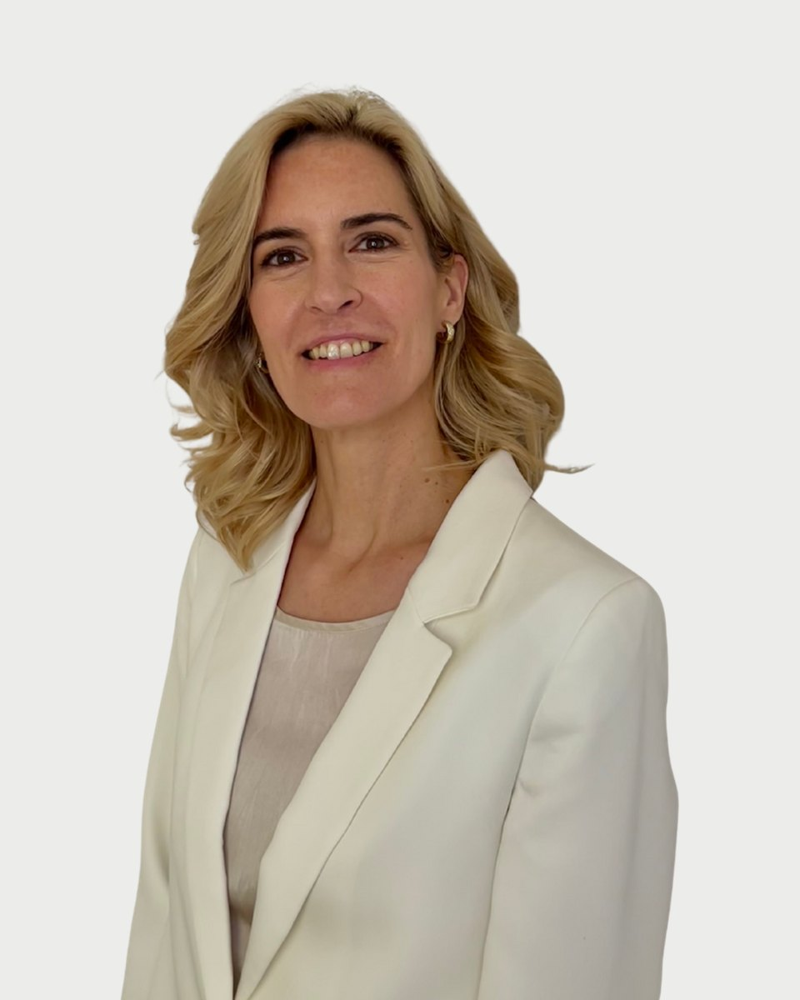

Regiszter 25 · Pszichológus
Molnár Adrienn
Bemutatkozás
Molnár Adrienn saját szavaival. Egy alkalom díja 15-20 ezer forint. A díjakról
Sorstársak vagyunk, én is kértem már segítséget pszichológustól, mielőtt magam is azzá váltam, és azóta is jártam másoknál részben a képzéseim kötelező elemeként, részben önszántamból.
Így több, mint 1000 órányi saját élményem van különböző egyéni és csoportos folyamatokban (pszichodráma, mozgás-és táncterápia, személyközpontú terápia stb.), ami a szilárd alap nemcsak az önismeretemben, de a szakmai kompetenciáimban is. Vallom ugyanis, hogy befelé van felfelé: a nehéznek tűnő helyzetekből sokszor önmagunk fejlődése által lehet kiutat nyerni, mintegy "túlnőve" a problémán. Mindamellett szeretek az önismereti útra úgy is tekinteni, mint játékos kalandra, nemcsak mint izzadságos munkára. Akárhogy is, ez egy befektetés időben, pénzben, energiában, saját magunkba. Erőt és szabadságot ad, hogy igazán önmagunkká váljunk.
Ebben a növekedésben, a valódi én kibontakoztatásában szeretnék segíteni a hozzám fordulóknak. Megközelítésem alapvetően ún. "személyközpontú": fókuszban a fejlődni képes személy, kevésbé a tünet vagy a diagnózis; az itt és most illetve a jövő, kevésbé a múlt; a kapcsolat és az általa átélt élmények, érzések, kevésbé a technika; az Ön vágyai, nem a mások elvárásai.
Az élet célja az, "hogy azzá lehessünk, akik valóban vagyunk".Søren Kierkegaard
A jó élet nem állapot, hanem folyamat. Nem cél, hanem irány. (.) A jó élet elmozdulás olyan irányba, amelyet az ember teljes lényével választ akkor, amikor belsőleg szabadon választhat bármely irányt"
". a jó élet nem a nyúlszívűeknek való. Szervesen tartalmazza a növekedési fájdalmat, amely azzal kapcsolatos, hogy a személy egyre inkább azonosul a saját lehetőségeivel. Magában foglalja az ilyen létezéshez szükséges bátorságot is. Azt is jelenti, hogy a személy beleveti magát az élet fő sodrába. Az emberrel kapcsolatban talán a legizgalmasabb, hogy a bensőjében szabad ember a valakivé válás [önmagává válás] folyamatát választja jó életként." (Carl Rogers)
Hitvallás
Képzés és szakmai út
A képzések és a szupervízió az akkreditált szakképzőhely rendjében folynak. Mit jelent ez Önnek
Tanítómesterek
- Prof. Tringer Lászlópszichiáter, kiképző terapeuta a személyközpontú módszerspecifikus képzésen, számomra a "magyar Carl Rogers".
- Dr. Merény Mártapszichiáter, mozgás-és táncterapeuta, az együttérzés non-verbális kifejezésének virtuóza.
- Prof. Racsmány Mihálya Szegedi Tudományegyetem Pszichológiai Intézetének vezetője, az emlékezet működésének neves kutatója, akitől sokat tanultam arról, hogy hogyan kell tanulni.
- Dr. Zimmer Mártabiológus, pszichológus, aki a legbonyolultabb agyi folyamatokat is érthetően és humorral magyarázta a mesterképzésen.
- Dr. Szidnai Lászlóklinikai szakpszichológus, igazságügyi grafológus szakértő, aki bevezetett a kézírás elemzés rejtelmeibe, a tudattalan motívumok láthatóvá tételébe.
- Carl RogersErich Fromm, Eric Berne, Ken Wilber, akiknek pszichológiai, filozófiai világlátásával a leginkább azonosulok.
- Mindazoka barátaim, ismerőseim, terápiás csoporttársaim akik az évek során megosztották velem a legbelsőbb gondolataikat, érzéseiket.
- Egyetemivégzettség
- Budapesti Műszakiés Gazdaságtudományi Egyetem, GTK, Kognitív neuropszichológia MA, 2024
- Károli Gáspár Református EgyetemBTK, Viselkedéselemző BA, 2022
- Central European UniversityCEU Business School, Master of Business Administration (MBA), 2009
- Budapesti Corvinus EgyetemKözgazdász Msc, 2003
- Módszerspecifikusképzések
- Magyar Személyközpontú Pszichoterápiásés Tanácsadási Egyesület, Személyközpontú tanácsadó, 2025
- (folyamatban) Magyar Mozgás- és Táncterápiás Egyesület, mozgás- és táncterápiás szakember szakirányú továbbképzés első fele, a 300 órás sajátélményű önismereti csoport elvégzése teljesítve
- Egyébképzettségek
- Lukács Oktatási Központokleveles grafológus, 2023
- Fitness Companyokleveles aerobik edző, személyi edző, gerinctrainer, 2013-2014
Regiszter 25
Időpont Molnár Adriennnél
Az ügyfélszolgálat hétköznap 9 és 15 óra között egyeztet. Ha bizonytalan, hogy Ön kihez tartozik, azt is megbeszélik, és ha kell, más kollégát javasolnak.